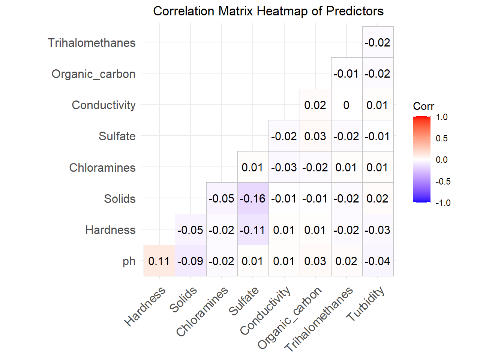

library(tidyverse)
library(knitr)
library(gt)
library(ggcorrplot)EDA
1. Introduction
This document will include exploratory data analysis of the water potability dataset. The goal of the EDA is to understand the structure and quality of the data, as well as any relationships between the variables. The ultimate goal is to select a model that predicts water potability from the other variables.
2. Description of Dataset
The dataset for this analysis contains water quality metrics for 3276 different water bodies.
There are nine (9) numerical explanatory variables and one (1) categorical response variable (Potability). The variables and their descriptions are as follows:
| Variable | Type | Description | Units |
|---|---|---|---|
| ph | Numerical | pH of water, 0 to 14 scale | unitless |
| Hardness | Numerical | Amount of dissolved calcium and magnesium | mg/L |
| Solids | Numerical | Total dissolved solids | ppm |
| Chloramines | Numerical | Chloramine concentration | ppm |
| Sulfate | Numerical | Dissolved sulfates | mg/L |
| Conductivity | Numerical | Electrical conductivity | μS/cm |
| Organic_carbon | Numerical | Total organic carbon | ppm |
| Trihalomethanes | Numerical | Trihalomethane concentration | μg/L |
| Turbidity | Numerical | Suspended solids, measured by light-emission | NTU |
| Potability | Categorical | Safe for consumption, 1 = potable, 0 = not potable | unitless |
Further details about the data are available here: https://www.kaggle.com/datasets/adityakadiwal/water-potability
For our analysis, Potability is the response variable while the others are designated as predictors.
3. Data Cleaning
- Read in the data
water_data <- read_csv("Data/water_potability.csv")- Check for any NA values
enframe(colSums(is.na(water_data)), # tally the NA values
name = "Variable", # rename column
value = "Count") |> # rename column
gt() |>
tab_header(title = "NA Values in Original Dataset")| NA Values in Original Dataset | |
| Variable | Count |
|---|---|
| ph | 491 |
| Hardness | 0 |
| Solids | 0 |
| Chloramines | 0 |
| Sulfate | 781 |
| Conductivity | 0 |
| Organic_carbon | 0 |
| Trihalomethanes | 162 |
| Turbidity | 0 |
| Potability | 0 |
It looks like we have quite a few NA values. Let’s look at how many observations are complete.
sum(complete.cases(water_data))[1] 2011Before removing the incomplete observations, explore whether the rate of potability among complete observations is similar to the rate among incomplete observations
water_data |>
mutate(status = if_else(complete.cases(water_data), "complete", "incomplete")) |> # assign complete/incomplete status
group_by(status) |> # group by incomplete/complete
summarise(count = n(), potability_rate = mean(Potability)) |> # for each group, report count and mean Potability (still a 0 or 1 numeric)
gt() |>
tab_header(title = "Summary of Complete vs Incomplete Observations")| Summary of Complete vs Incomplete Observations | ||
| status | count | potability_rate |
|---|---|---|
| complete | 2011 | 0.4032819 |
| incomplete | 1265 | 0.3691700 |
Potability rates are similar among complete and incomplete observations (40.3% vs 36.9%), indicating that the missing values are not strongly associated with the response. Therefore we will treat the missing values as approximately random and remove these observations. The remaining dataset of complete observations is sufficiently large (n = 2011) to fit models.
water_data <- drop_na(water_data) # removing all observations with NA- Convert Potability to Factor
water_data <- water_data |>
mutate(Potability = factor(Potability))- Save Cleaned Data
write_rds(water_data, "Data/water_clean.rds")
# now readily available for use elsewhere4. Exploratory Data Analysis
- First an overview of the center and spread of the predictor variables:
summary(water_data) ph Hardness Solids Chloramines
Min. : 0.2275 Min. : 73.49 Min. : 320.9 Min. : 1.391
1st Qu.: 6.0897 1st Qu.:176.74 1st Qu.:15615.7 1st Qu.: 6.139
Median : 7.0273 Median :197.19 Median :20933.5 Median : 7.144
Mean : 7.0860 Mean :195.97 Mean :21917.4 Mean : 7.134
3rd Qu.: 8.0530 3rd Qu.:216.44 3rd Qu.:27182.6 3rd Qu.: 8.110
Max. :14.0000 Max. :317.34 Max. :56488.7 Max. :13.127
Sulfate Conductivity Organic_carbon Trihalomethanes
Min. :129.0 Min. :201.6 Min. : 2.20 Min. : 8.577
1st Qu.:307.6 1st Qu.:366.7 1st Qu.:12.12 1st Qu.: 55.953
Median :332.2 Median :423.5 Median :14.32 Median : 66.542
Mean :333.2 Mean :426.5 Mean :14.36 Mean : 66.401
3rd Qu.:359.3 3rd Qu.:482.4 3rd Qu.:16.68 3rd Qu.: 77.292
Max. :481.0 Max. :753.3 Max. :27.01 Max. :124.000
Turbidity Potability
Min. :1.450 0:1200
1st Qu.:3.443 1: 811
Median :3.968
Mean :3.970
3rd Qu.:4.514
Max. :6.495 - Now let’s examine the predictors grouped by potability
water_data |>
group_by(Potability) |> # group by potability
summarise(across(everything(), list(mean = mean, sd = sd), .names = "{.col}&{.fn}")) |> # report mean and std for each variable. separate names with "&" so as to not conflict with underscore
pivot_longer(-Potability, # exclude Potability from the pivot
names_to = c("Variable", ".value"),
names_sep = "&") |>
pivot_wider(names_from = Potability,
values_from = c(mean, sd),
names_glue = "{.value}_P{Potability}") |> # P0 for non-potable and P1 for potable
mutate(across(-Variable, round, digits = 2)) |> # rounding to two decimals
gt() |>
tab_header(title = "Predictor Means and Standard Deviations by Potability",
subtitle = "P0 = Non-Potable; P1 = Potable")| Predictor Means and Standard Deviations by Potability | ||||
| P0 = Non-Potable; P1 = Potable | ||||
| Variable | mean_P0 | mean_P1 | sd_P0 | sd_P1 |
|---|---|---|---|---|
| ph | 7.07 | 7.11 | 1.66 | 1.44 |
| Hardness | 196.01 | 195.91 | 30.72 | 35.30 |
| Solids | 21628.54 | 22344.92 | 8461.11 | 8891.55 |
| Chloramines | 7.11 | 7.17 | 1.48 | 1.73 |
| Sulfate | 333.74 | 332.46 | 36.40 | 47.45 |
| Conductivity | 427.55 | 425.01 | 79.88 | 81.95 |
| Organic_carbon | 14.40 | 14.29 | 3.37 | 3.26 |
| Trihalomethanes | 66.28 | 66.58 | 15.93 | 16.30 |
| Turbidity | 3.96 | 3.99 | 0.78 | 0.78 |
For each predictor, the mean values across potability classes are very similar. Standard deviations by potability are comparable as well. This suggests that a simple linear model is unlikely to be successful in predicting potability. Tree-based models capture interactions and non-linear effects, and therefore are better suited to detect any relationships that may exist.
- Let’s plot all predictors grouped by potability
water_data |>
pivot_longer(-Potability) |> # required for faceting
ggplot(aes(value, fill = Potability)) + # coloring by Potability
geom_density(alpha = 0.4) +
facet_wrap(~ name, scales = "free") + # facets by name (per the pivot). "free" allows the scales to adjust for each facet
labs(title = "Density Plot of Predictors",
subtitle = "Grouped by Potability",
fill = "Potability") +
theme(plot.title = element_text(hjust = 0.5),
plot.subtitle = element_text(hjust = 0.5)) # Centers the title and subtitle
This plot reinforces the earlier finding: the predictor distributions are not clearly separated by potability. Hardness, ph, and Sulfate show slightly different peak heights between the two classes, but their centers and spreads are nearly identical.
- Finally, let’s look for any linear correlation between the predictors
water_data |>
select(-Potability) |> # looking at the predictors without respect to Potability
cor() |>
ggcorrplot(type = "lower", lab = TRUE) +
labs(title = "Correlation Matrix Heatmap of Predictors") +
theme(plot.title = element_text(hjust = 0.5))
The correlation heatmap reveals negligible linear relationships between any of the predictors. (Note: This does not necessarily mean the predictors are independent, only that there is no linear relationship.)
Next, we will create models to predict potability.